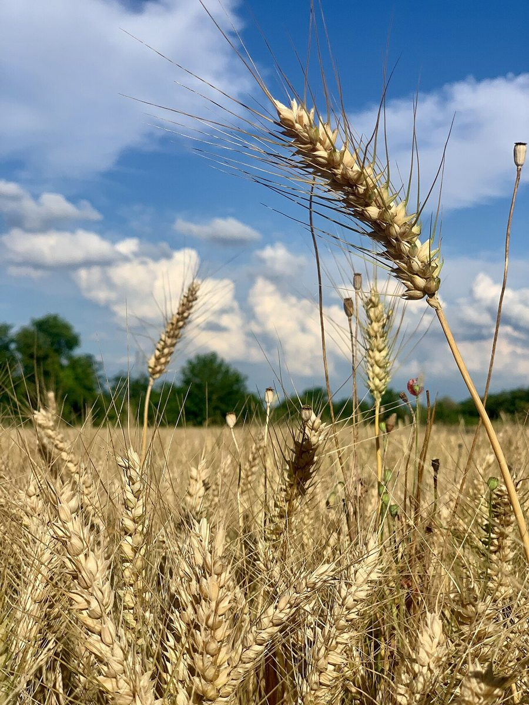
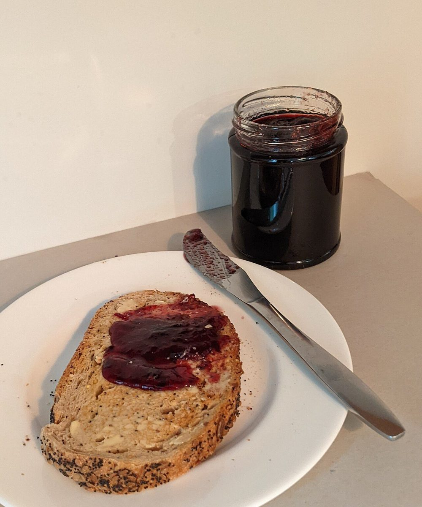

minairo
bread
ベーカリー / 高知県高知市
高知県高知市南万々のベーカリー「minairo bread」のご案内ページです。営業時間やメニューなど、詳しいことは準備中。まずはInstagramをのぞいてみてください。

制作側の連想
麦から食卓までの五歩
店名の由来は分かりません。制作側は「パン」という業種から、麦の穂がパンになって食卓へ届くまでを、階段を一段ずつ上がるように並べてみました。お店の理念・由来とは無関係の、制作側の連想です。以下の写真はどれもフリー素材のイメージで、このお店の工程や商品ではありません。
- 一歩麦穂のかたち

国外のイメージ 
撮影地不明のイメージ - 二歩生地のばして、まるめて

国外のイメージ(アメリカ) 
撮影地不明のイメージ - 三歩焼き色こんがりの茶色

国外のイメージ(アメリカ) 
国外のイメージ(香港) 
国外のイメージ(ブラジル) - 四歩切り口断面と気泡

撮影地不明のイメージ 国外のイメージ(フランス) 
撮影地不明のイメージ - 五歩食卓バターとジャム

国外のイメージ(オーストラリア) 
国外のイメージ(イギリス) 
国外のイメージ(イギリス)